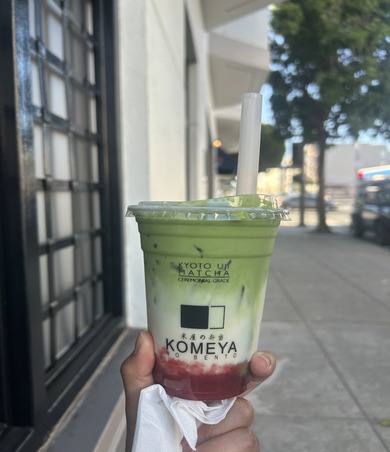
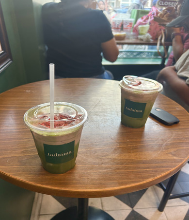
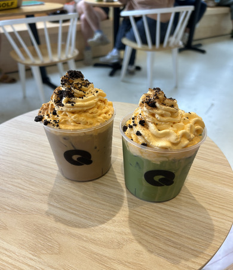

The Best Ceremonial Matcha Lattes in San Francisco
Welcome to the review blog of an avid Matcha consumer. My name is Lei, and I’ll take you on a journey to my top three ceremonial-grade matcha latte spots in San Francisco. I visited three restraunts/cafes: Komeya No Bento, Tadaima, and Q Speciality Coffee. The focus of the review is on the matcha drinks themselves, not the cafes as a whole. I grade each matcha latte on its color, texture, milk-to-matcha ratio balance, and overall taste. This blog is for the Matcha lovers, beginners, wonderers, and anyone who is interested in finding out what quality Matcha looks and tastes like. These are spots I have come across and have rated as my top three in terms of San Francisco after trying numerous Matcha spots. What makes a good Matcha? The first thing I look for is a bright green color in a matcha similar to an emerald hue. Dull or yellowish matcha is oftentimes an immediate no for me, hence why I decided to review known ceremonial grade matcha spots. In this blog, we taste the best of the best. I enjoy being able to taste the matcha while having hints of creaminess due to milk/flavoring. I like the Matcha to dominate the taste of the drink rather than be diluted with milk/ice. The last thing I look for is texture, i.e., how smooth the matcha is blended into the rest of the drink (no chunks).
Komeya Review
Starting off really strong, we have Komeya No Bento – the top Matcha spot in San Francisco according to the review criteria. Komeya uses an award-winning ceremonial-grade Kyoto Uji matcha from the famed tea house Marukyu Koyamaen. Their most popular drinks include an Iced Matcha Straight, Iced Matcha Latte, Strawberry Fresh Milk with Matcha Foam, and their Mango Fresh Milk with Matcha Foam. I decided to get their Strawberry Fresh drink – essentially an iced Strawberry Matcha latte. This drink is especially appealing for those who enjoy a fruity twist on a traditional matcha latte, as it combines the richness of matcha with the sweetness of strawberry milk. Komeya’s matcha color features a vibrant and bright green, catching your eye right off the bat. It has one of the best colors of matcha I’ve seen, and for that I rate its color a five out of five stars. The contrast between the bright green matcha and the pink strawberry milk also makes the drink very aesthetically pleasing, especially before mixing the two layers together. The texture of the drink itself is extremely smooth. It is often the most notable trait of Komeya’s Matcha in general. The Matcha is whisked completely and properly, leaving absolutely no traces of powder or chunks behind. The drink goes down easily and soothingly. The milk-to-matcha ratio holds a bit more milk than I usually prefer; however, this drink does prioritize the Strawberry milk – as the Matcha sits on top. The milk is extremely creamy and very sweet. Anyone who enjoys a creamy, sweet, and thicker Matcha will enjoy this drink, as well as Komeya in general. It has a quality taste while perfectly balancing the creaminess of another add-on flavor. The drink is frothy, smooth, and delectable. While I typically prefer a stronger matcha flavor, I found that the sweetness of the strawberry milk complemented the matcha rather than completely overpowering it. Each sip provides a combination of flavors that makes the drink enjoyable from beginning to end. Overall, Komeya stands out to me because of its attention to quality, especially when it comes to the vibrant color and incredibly smooth texture of its matcha. Although its milk-to-matcha ratio isn’t necessarily my personal favorite, the drink still delivers an exceptional taste and experience. For anyone looking for a high-quality matcha latte in San Francisco, Komeya is definitely a spot worth trying.
📋 Menu
📍 Location: 3137 Laguna St.
🍓 What I Got: Strawberry Fresh Milk with Matcha Foam

Rating: 4.75/5
Scores
- Color: ⭐⭐⭐⭐⭐
- Texture: ⭐⭐⭐⭐⭐
- Milk-to-Matcha Ratio: ⭐⭐⭐⭐
- Taste: ⭐⭐⭐⭐⭐
Tadaima Review
Tadaima is oftentimes my go-to matcha spot due to its great taste and accessibility due to having multiple locations. Tadaima is highly popular for its artisanal ceremonial-grade matcha, specialty cream toppings, and Japanese comfort foods like sandos and onigiri. For this cafe, I got an Iced Matcha Latte with Strawberry cream. One of the things I particularly enjoy about Tadaima is the variety of cream toppings available, allowing customers to customize their matcha while still enjoying its original flavor. The strawberry cream is one of my personal favorites because of how well it complements the matcha without taking away from its quality. Tadaima’s color of matcha is deep and decently vibrant. However, it isn’t as bright as I’d typically like it to be. While its color is still appealing, I tend to associate a brighter and more vibrant green with a higher-quality matcha, which is why I gave it a slightly lower rating in this category. I’ve found that the texture of Tadaima can vary – as sometimes I’ve gotten a well-blended drink and other times I’ve found it to be the teensiest bit grainy. In this case, my drink was a bit grainy. However, the milk-to-matcha ratio was quick to make me forget about the texture. The balance of this ratio is perfect, as the quality matcha taste is front-facing – while the strawberry flavor comes second. This is especially important to me because I prefer matcha drinks that maintain a strong and recognizable matcha flavor, rather than tasting primarily like milk or added sweeteners. The strawberry is sweet and frothy, but not overpowering. I also really enjoy the fact that it comes with dried-up smaller pieces of strawberry, adding to its texture. These smaller pieces provide an additional element to the drink, making each sip slightly different and adding to the overall experience. Overall, Tadaima’s matcha is quality, delicious, and has a great milk-to-matcha ratio, making it a standout for me. Although its texture can occasionally be inconsistent, the balance of flavors makes up for this minor drawback. Tadaima remains one of my favorite matcha spots in San Francisco, especially when I want a reliable and flavorful matcha latte with a sweet addition.
📋 Menu:
📍 Locations: 3515 20th St, San Francisco, CA 94110; 1849 Union St,
San Francisco, CA 94123; 1248 9th Ave, San Francisco, CA 94122
🍓 What I Got: Matcha Latte with Strawberry Cream

Rating: 4.43/5
Scores
- Color: ⭐⭐⭐⭐
- Texture: ⭐⭐⭐⭐.2
- Milk-to-Matcha Ratio: ⭐⭐⭐⭐⭐
- Overall Taste: ⭐⭐⭐⭐.5
Q Speciality Coffee Review
Q Speciality Coffee is a popular, trendy cafe renowned for its premium, innovative matcha beverages and in-house roasted coffee. They feature aesthetic “Cloud” drinks layered with thick, handcrafted cream tops like strawberry, yuzu, and a new limited-edition fall pumpkin spice cloud top. In this case, I decided to be festive and try their Pumpkin Spice Cloud Matcha Latte – focusing on the matcha taste itself and balance with the cloud. As someone who enjoys trying different variations of matcha lattes, I was particularly interested in seeing how the seasonal pumpkin spice flavor would complement the matcha without overpowering its natural taste. Q’s Matcha color is vibrant and a display of its quality. Although it has a nice green color, I found it to be slightly less vibrant compared to some of the other matcha spots I’ve tried, which is why I gave its color a slightly lower rating. The texture of the drink itself is overall smooth – as drinks are usually well blended. However, it’s not the cutting-edge smoothness that Komeya has. While the texture is still enjoyable, there is a noticeable difference when comparing the two, especially when paying close attention to how smoothly the matcha goes down. The milk-to-matcha ratio is very distinct as it prioritizes the matcha taste, making it very strong. However, it still has a decent creaminess to it, especially because of the cloud. I particularly appreciate this balance because I tend to prefer matcha lattes where the matcha flavor remains the main focus, even when additional flavors are introduced. The pumpkin spice cloud itself was very delectable and not too sweet. Mixing it gave a perfect strong, tasty, matcha latte with hints of pumpkin spice – which is desirable with a quality matcha latte. The pumpkin spice flavor added a subtle seasonal twist without completely changing the original taste of the matcha. I also enjoyed how the thick cloud topping gradually blended into the drink, creating a creamier consistency as I continued drinking it. Overall, Q Speciality really puts the quality in Q, as its Matcha drinks are delectable, fun, and balanced. Although it may not have the smoothest texture or brightest color compared to other cafes, its creative flavors and strong matcha taste make it a great option for anyone looking to try something different. I would especially recommend this drink to anyone who enjoys seasonal flavors but still wants the quality and taste of a traditional matcha latte.
📋 Menu
📍 Location: 3490 California St, Suite A, San Francisco, CA 94118
🍁 What I Got: Pumpkin Spice Cloud Matcha Latte

Rating: 4.13/5
Scores
- Color: ⭐⭐⭐⭐
- Texture: ⭐⭐⭐⭐
- Milk-to-Matcha Ratio: ⭐⭐⭐⭐.5
- Overall Taste: ⭐⭐⭐⭐